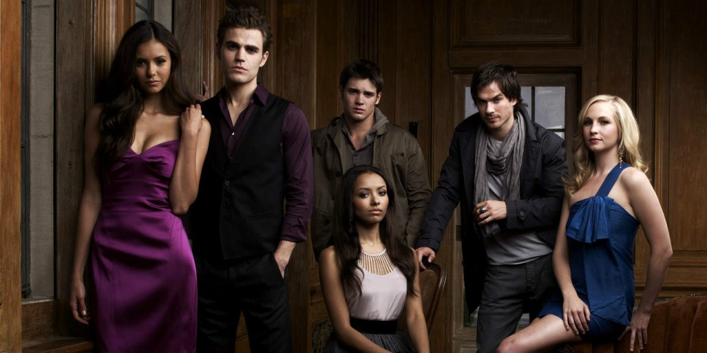

The vampire diaries
Uma história épica, com romance e suspense de tirar o fôlego.

A série é situada em Mystic Falls, Virgínia, uma pequena cidade fictícia assombrada por seres sobrenaturais de todas as espécies. O foco inicial é o triângulo amoroso entre a estudante Elena Gilbert (Nina Dobrev) e os irmãos Salvatore, Stefan (Paul Wesley) e Damon (Ian Somerhalder), dois vampiros condenados a viver a eternidade lutando pelo amor da mesma mulher. O episódio piloto foi ao ar em 10 de setembro de 2009 e atraiu a maior audiência da história da emissora desde a sua estreia em 2006.[3] A primeira temporada teve uma média de 3,6 milhões de telespectadores.
Visite o site spara mais informações!